Press start
Cómo se usa el menú
Al encender la bartop aparece EmulationStation, el menú desde el que se elige el juego. Primero se elige el sistema (recreativa, Mega Drive, PlayStation…) y luego el juego. Todo se maneja con el joystick y los botones del panel, sin teclado.

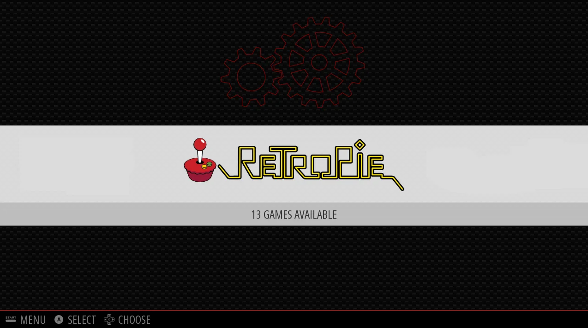
Los botones en el menú
Los dos mandos sirven igual: cualquiera de los dos jugadores puede moverse por el menú.

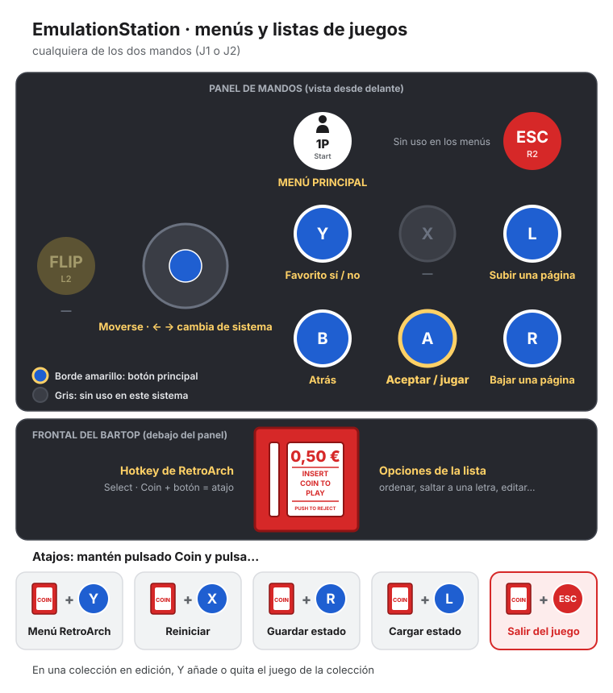
| Botón | Qué hace en el menú |
|---|---|
 | Moverse. Dentro de una lista de juegos, a izquierda y derecha cambia de sistema |
 | Entrar y jugar |
 | Volver atrás |
 | Marcar o desmarcar el juego como favorito |
 | Subir una página de la lista |
 | Bajar una página de la lista |
 | Abrir el menú principal |
 | Opciones de la lista: ordenar, saltar a una letra… |
Jugar y salir
- Con el joystick, elegir el sistema y pulsar A.
- Buscar el juego en la lista. Al pararse encima, se ven su portada, un vídeo corto y su descripción.
- Pulsar A para jugar.
- Para salir del juego y volver al menú: mantener Coin y pulsar ESC.
Con Coin mantenido hay más atajos durante el juego, como guardar y cargar la partida. Están en la página La bartop.
El menú principal
Se abre con 1P. Casi nunca hace falta, pero aquí están el volumen, el aspecto del menú, las colecciones y el apagado.

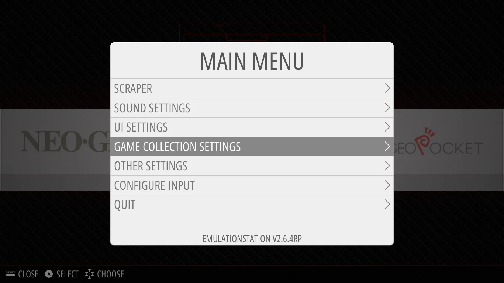
| Opción | Para qué sirve |
|---|---|
| Sound settings | Subir o bajar el volumen y los sonidos del menú |
| UI settings | Cambiar el aspecto del menú y el salvapantallas |
| Game collection settings | Activar los favoritos y crear colecciones (ver abajo) |
| Configure input | No tocar: la bartop ya tiene sus botones ajustados y esto los cambiaría |
| Quit | Apagar o reiniciar la bartop |
Favoritos
Para tener a mano los juegos que más se usan, en un «sistema» propio llamado Favorites.
Paso 1. Pulsar 1P y entrar en Game collection settings.

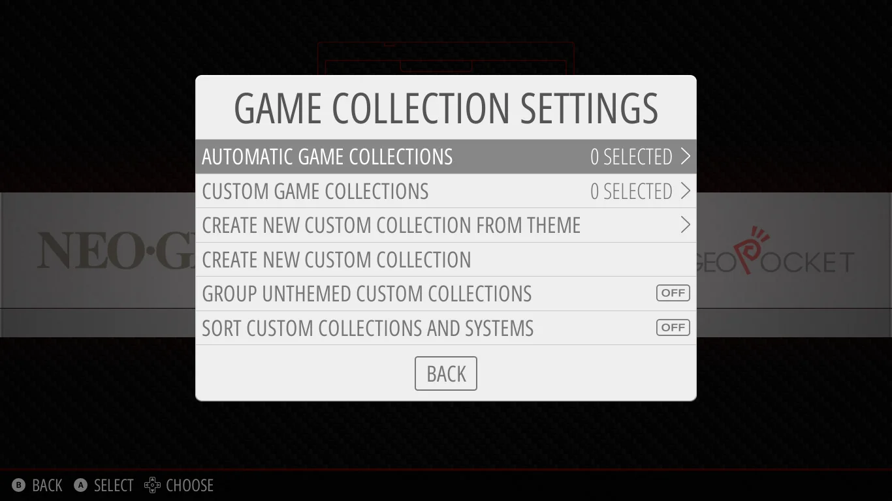
Paso 2. Entrar en Automatic game collections y marcar Favorites. Ahí también se pueden activar Last played (los últimos juegos a los que se ha jugado) y All games (todos los juegos juntos).

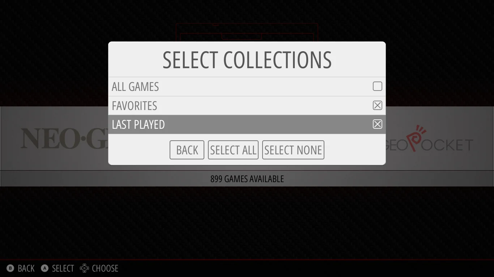
Paso 3. Volver atrás con B. Los sistemas nuevos aparecen en el carrusel, junto a los demás.

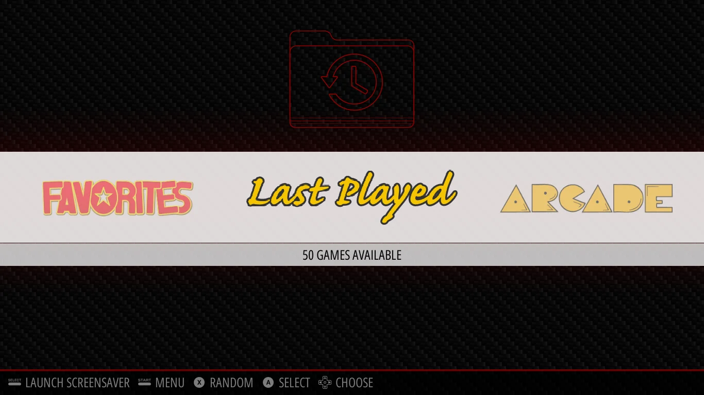
Añadir un favorito: en la lista de juegos, ponerse encima del juego y pulsar Y. Pulsarlo otra vez lo quita.
Los favoritos se guardan al salir del menú. Para no perderlos, apagar desde 1P → Quit en lugar de quitar la corriente directamente.
Colecciones
Una colección es una lista de juegos de varios sistemas juntos: por ejemplo, todos los Street Fighter o todos los juegos de naves. Salen en el carrusel como un sistema más, con su logo.
La bartop ya trae estas:
| Colección | Juegos |
|---|---|
| Plataformas | 78 |
| Beat 'em up (de pelea por fases) | 46 |
| Shmups (de naves) | 40 |
| Deportes | 21 |
| Street Fighter | 14 |
| King of Fighters | 12 |
| Pinball | 8 |
| Disney · Fatal Fury · Metal Slug | 7 cada una |
| Batman · Mario · Sonic | 6 cada una |
| Double Dragon · Pac-Man | 4 cada una |
| Donkey Kong · Ghouls'n Ghosts · Spider-Man · Wonder Boy | 3 cada una |
Wonder Boy no tiene logo propio en el tema del menú, así que está dentro de una carpeta llamada Collections.
Crear una colección
Paso 1. Pulsar 1P → Game collection settings → Create new custom collection. Para escribir el nombre hace falta un teclado USB. Sin teclado, se puede elegir uno de los nombres que ofrece el tema con Create new custom collection from theme.

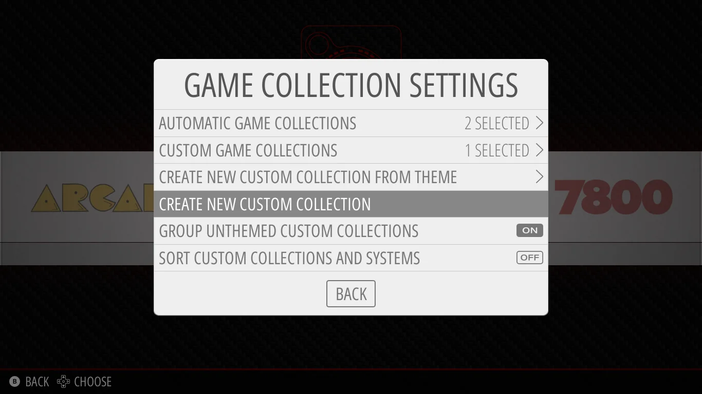
Paso 2. El menú pasa a modo edición y lo avisa arriba. Mientras dure, Y añade juegos a la colección en lugar de a favoritos.

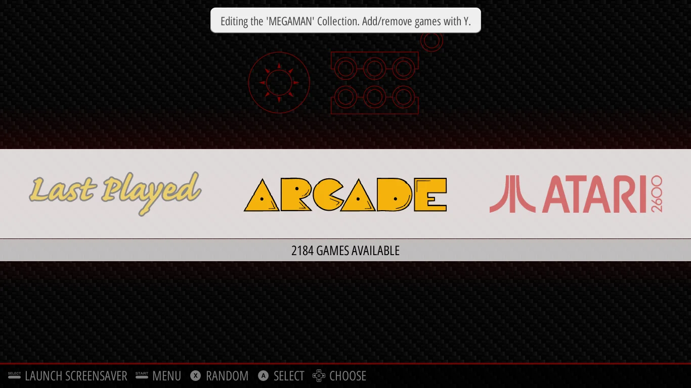
Paso 3. Ir a cada juego y pulsar Y. Sale un aviso de que se ha añadido.

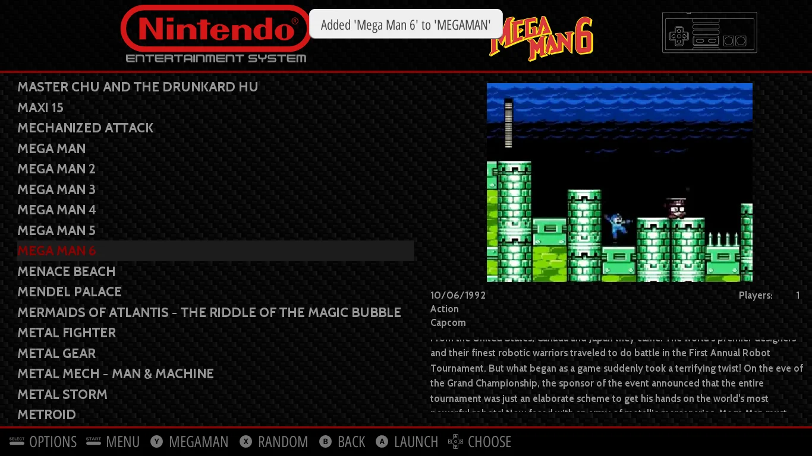
Paso 4. Para terminar, pulsar Coin en cualquier lista y elegir Finish editing … collection.

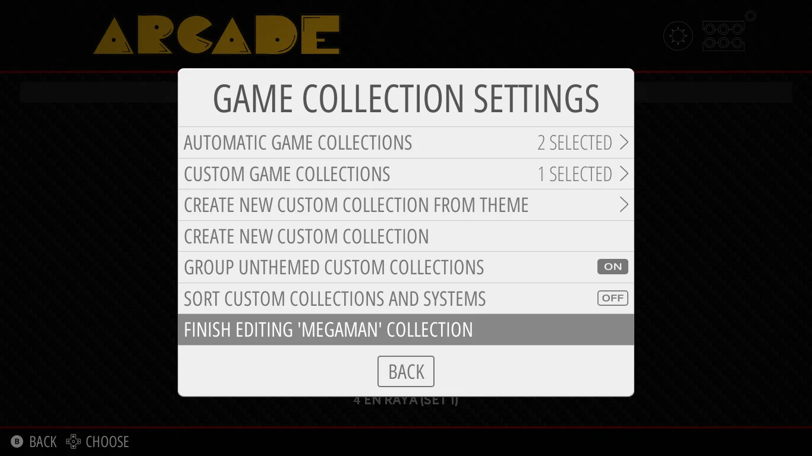
Cambiar una colección
Entrar en la colección, pulsar Coin → Add/remove games to this game collection, y otra vez Y en cada juego para añadirlo o quitarlo.

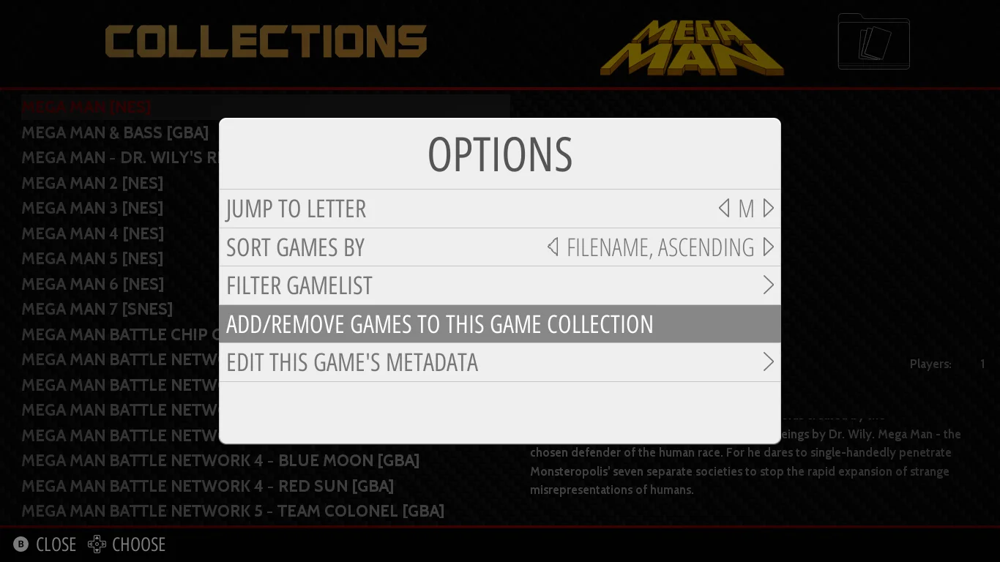